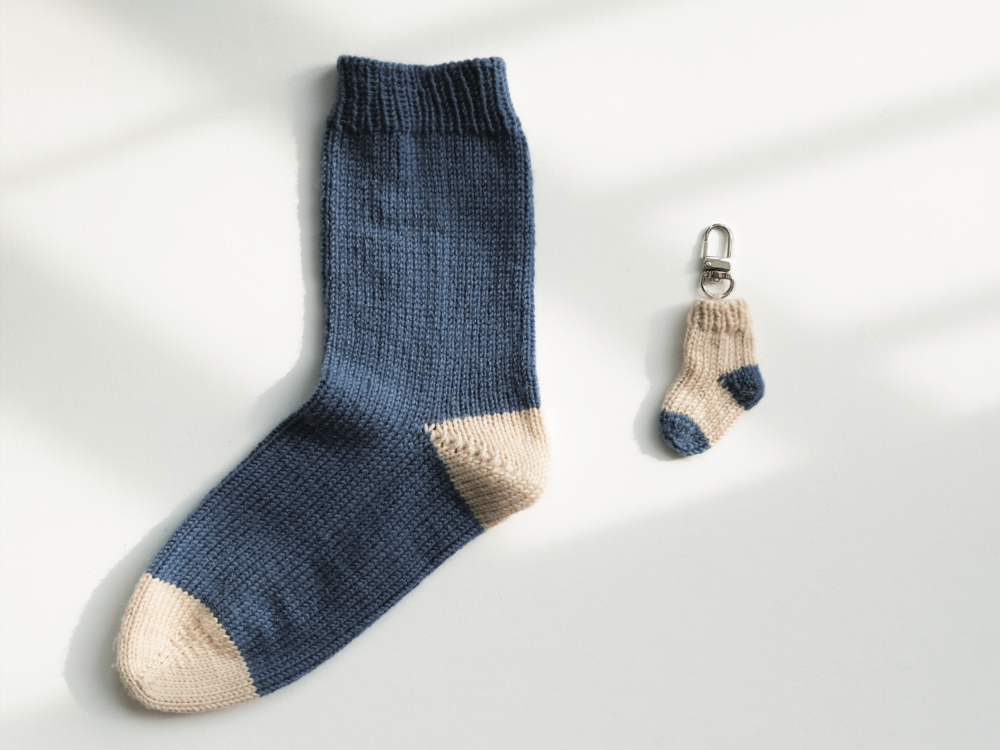
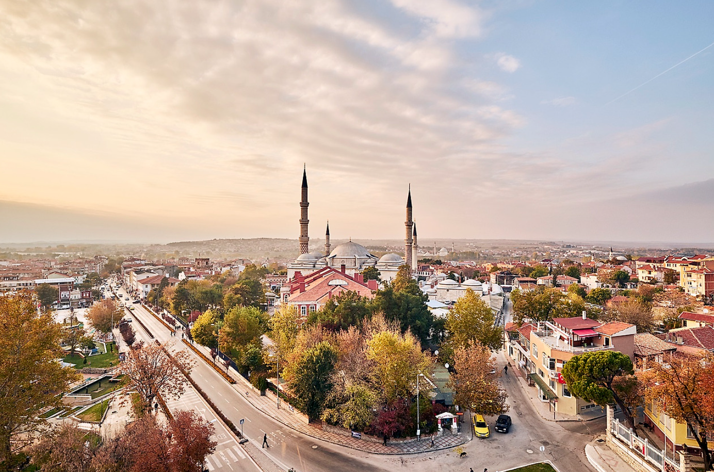

나누고 싶은 이야기가 정말 많은데 다 담질 못해 몇 가지만 이야기하려 합니다. 먼저는 선교의 여정 가운데 하나님의 섬세한 책임지심을 경험하게 되었습니다. 은혜의 이야기는 아닐지 모르나 나누면, 저는 이번에 양말로 인해서 하나님의 섬세하심을 보게 되었습니다. 2주간 사역을 하면 중간에 한번 합숙하게 되는데, 그 때 반드시 해야 하는 것 중 하나가 빨래입니다. 배낭여행을 하기에 짐을 최소화하는데, 그렇기에 중간에 한 번 빨래를 해주어야 2주 차에 불쾌하지 않게 여정을 이어갈 수 있기 때문입니다. 하지만 안타깝게도 저는 중간 합숙 때 빨래를 할 수 없었습니다. 팀을 섬겨야 하는 여러 일들로 인해 도저히 시간이 없었기 때문입니다. 다른 것은 넉넉히 챙겨가 괜찮았으나, 양말은 이제 한 켤레 밖에 남지 않는 비상 상황이였습니다. 한 주를 버티기에는 불가능한 상황 가운데, 팀원들과 현지 영혼들이 불쾌하지 않기를 바라며 2주 차의 사역을 시작하고 마을로 들어가 영혼들과 교제하며 복음을 증거하는 사역을 이어갔습니다. 다음날 헤어지려는 그 순간, 놀랍게도 현지 영혼은 저에게 양말을 선물해 주었습니다. 10번이상의 단기선교를 가보았지만, 양말 선물은 처음 받아보아 참 신기하다고 생각하며 감사를 고백했습니다. 그런데 여기서 끝나지 않고 다음 날도, 그다음 날도 저는 총 3번의 양말을 선물 받게 되었습니다. 덕분에 팀원들도, 현지 영혼들도 저의 비상 상황을 알지 못한 채 청결한 기분으로 2주 차 사역을 이어갈 수 있었습니다. 한 번의 양말 선물도 놀라운데, 연속해서 3번을 양말을 선물 받으며 하나님의 놀랍고 섬세하신 도우심을 고백할 수밖에 없습니다. 사람들을 섬기고, 복음을 증거하고자 집중했던 저의 마음 가운데 하나님은 오히려 저를 섬겨주시고 책임져주시며 얼마나 섬세하게 저의 여정가운데 함께하시는지를 보여주셨습니다. 아주 사소하고 별것 아닌것 같은 양말 선물이지만, 그렇게 사소한 영역에서도 조차도 주님은 저의 필요와 결핍을 주목하시고 당신의 사랑으로 채워주셨습니다. 먼저 주님의 나라와 뜻을 구할 때 이외의 모든 것도 더하시겠다는 주님의 말씀이 얼마나 신실하고 미쁘신 약속인줄 모릅니다. 저와 중보자님 모두 그 주님의 신실하심을 누리길 소망합니다.

<양말 사진, 이것도 제건 아니에요>
양말의 은혜도 참 잊을 수 없지만, 사실 이번 단기의 여정가운데 가장 많이 보게 하신 건 이 땅을 향한 주님의 마음이었습니다. 이 마음을 받기까지의 과정을 설명하기에 앞서 제 기도 편지를 여러 번 보신 분들은아시겠지만, 비전선교단은 미전도지역으로 가 매일 새로운 마을과 영혼을 찾아 관계를 쌓고 복음을 증거하는 사역을 합니다. 사역하기에 앞서 팀원들과 말씀을 묵상하고 나누며, 나누어진 말씀을 붙잡고 하루를 살아가며 인도해 주신 영혼과 친구가 되어갑니다. 말씀을 묵상하고 그분의 인도하심만을 의지하면서 사람들을 섬기고 하루를 살아가는데, 어느 날 하루는 묵상하며 한 말씀을 계속해서 눈에 보이게 하셨습니다.
1 그 모든 백성이 요단을 건너가기를 마치매 여호와께서 여호수아에게 말씀하여 이르시되
3 그들에게 명령하여 이르기를 요단 가운데 제사장들의 발이 굳게 선 그 곳에서 돌 열둘을 택하여 그것을 가져다가 오늘밤 너희가 유숙할 그 곳에 두게 하라 하시니라
<여호수아 4장 1, 3절>
하나님은 이스라엘 백성이 가나안 땅에 들어가기 전 요단강을 건너게 하시면서 위 말씀을 하십니다. 요단강을 다 건넌 이후 지파의 지도자들을 다시 요단강으로 가게 하셔서 그곳에 있는 돌을 가져가게 하십니다. 묵상하며 이 시점이 너무나 특이하다는 생각을 하게되었습니다. 이왕 돌을 가져가게 하실 거면, 요단강을 건널 때 미리 들고 가라고 하시면 되는데.... 왜 다 건너고 다시 뒤로 돌아가게 하는, 비합리적이고 비효율적인 것 같은 시간을 허락하실까? 이런 질문이 들었습니다. 묵상을 이어가며 하나님은 이스라엘 모든 백성이 돌을 찾으러 돌아가는 여정을 주목하게 하시며, 요단강을 가르신 하나님의 은혜의 역사를 기억하기를 바라심을 묵상하게 되었습니다. 그렇게 가져온 돌들로 인해 당시 이스라엘 백성뿐 아니라 후손에 이르기까지 이 하나님의 역사를 대대로 기억하기를 바라시는 하나님의 마음이 있었습니다.
 <돌 옮기는 지도자들의 모습>
<돌 옮기는 지도자들의 모습>
마을을 정하고 돌아다닌 지 얼마 지나지 않아, n할아버지께서 저희를 환대해 주시며 집에 초청해 주었습니다. 집에는 부인인 m할머니가 계셨고 두 분 모두 팀을 환대해 주며 정말 맛있는 레몬 팬케이크를 대접해 주셨습니다. 제가 먹어본 팬케이크 중 가장 맛있었기에 즐겁게 먹으며 교제를 이어갔습니다. 두 분은 60대 초반이었으며 이슬람을 정말 열심히 믿고, 최근에 은퇴하신 상황이었습니다. 즐겁게 교제하던 중 할아버지께서 오늘 밤 우리들이 어디서 묵을지 물어보셨고, 아직은 계획이 없다고 답했습니다. 이야기를 듣더니 많이 안타까워하시며, 오늘 당신들이 손주 내 집에 가기로 약속되어 있어 집에서 재워주고 싶은데 안 될 것 같다고 말씀하시며 미안하다고 하셨습니다. 약속 잡고 온 것도 아니었기에 당연히 괜찮다고 답을 드렸고, 시간이 어느덧 오후 4시가 지나 이제 다른 곳으로 이동하려고 했었습니다. 오후 6시면 해가 지기에, 그 전에 사람들을 만나서 교제하고 예비하신 영혼이라는 사인이 있으면 머물고 관계를 쌓으며 복음을 전하고자 이제는 움직여야겠다고 생각했었기 때문입니다.
그런데 그때, 할아버지께서 갑자기 함께 차 타고 드라이브를 하자고 제안하셨습니다. 그냥 편하게 드라이브하고 교제할 수 있지만 저는 이 요청에 큰 고민에 빠지게 되었습니다. 왜냐하면, 곧 있으면 해가 지고 이 집에 오래 머물기 힘들기에 관계를 쌓고 복음을 전하기 어려울 것 같다는 생각이 있어 같이 드라이브 하는건 비효율적인 선택이라고 느껴졌기 때문입니다(이슬람권은 관계가 매우 중요하기에 먼저 삶을 나누는 깊은 관계를 맺은 이후 복음을 전합니다. 하지만 당시 이 집에는 오래 머물기 어렵다고 생각되어 복음을 전하기 어려울 것 같아 다른곳에 전하려 했습니다) 먼가 유의미하지 않은 움직임을 하는 것 같아 거절할지 생각하며 기도하는 그 때, 오늘 아침에 묵상했던 말씀을 생각나게 하시며 비합리적이고 비효율적으로 보이나 그 안에 하나님의 인도하심과 보게 하실 것이 있다는 마음을 주셔서, 한편으로는 불편한 마음을 가지고 제안에 승낙하고 할아버지와 함께 드라이브하게 되었습니다.
하지만 간단히 드라이브하는 줄 알았던 제 생각과 다르게, 약 2시간 넘는 관광지에 가서 약 5시간 동안 저희를 관광시켜 주셨습니다. 그리스 국경도 보게 되며 그 근방에 있는 관광지들을 운전하며 소개해 주셨습니다. 앞자리에 함께 앉아 교제하는 그 순간에, 피곤해하시는 할아버지와 할머니의 눈이 보였음에도 내색하지 않고 정성으로 우리를 섬겨주셔서, 고맙지만, 미안한 마음에 저녁을 사드리려 했는데 그것도 거절하시고 저희에게 밥과 함께 그 지역의 특산물과 기념품들을 사주셨습니다(이때 차 뒷자리에 앉아계시는 시니어 팀원분께서 관광하고 싶었던 본인의 기도를 주님이 들어주셨다고 감사하고 기뻐하고 계셨습니다 ㅎㅎ). 여튼 현지 영혼이 저희를 지극 정성으로 섬겨주고 계시기에, 왜 이렇게 우리팀에게 잘해주는지 물어보았고 이에 대한 할아버지 할머니의 답이 저에게는 너무나 충격적이였습니다.
"우리가 만난 건 우연이 아니라 운명인 것 같아, 너희들 우리와 함께했던 이 시간을 잊지 말고 기억해 줘"
"그리고 너희의 언어로 우리를 위해서 기도해 줘. 죽을 때까지 잊지 말고 기도해줘"
"죽을 때까지, 아니 너희의 자녀와 손자들에게 이르기까지 계속해서 우리를 기억하고 기도해 줘"
번역기로 이렇게 답하였습니다. 그냥 기억하고 기도해달라는 것도 아니고, 죽을 때까지, 손자에 이르기까지 기도해달라는 요청은 저는 이때 태어나서 처음 들어보았습니다. 이 말을 듣는 그 시간에 저와 팀원들은 오전에 묵상했던 말씀과 함께, 이 영혼을 향한 하나님의 마음을 느낄 수 있었습니다. 비합리적으로 보이나 반드시 보게 하실 것이 있다. 그것이 무엇일지 기도하는 우리에게, 이 영혼이 복음을 믿게 되기까지 이들 가운데 하나님의 나라가 임하기까지 대신해서 기도하길 바라시는 하나님의 뜻이 너무나 분명하게 풀어졌고, 이날 주님이 우리 가운데 보이게 하실 것이 우리를 향한 어떤 놀라운 하나님의 기적보다, 이 영혼이 구원을 얻길 간절히 바라셔서 우리에게 기도하도록 요청하시는 하나님 아버지의 마음이었습니다. 할아버지와 할머니가 우리에게 말했지만, 이들을 통하여 우리에게 말씀하시는 하나님의 말씀과 그분의 마음, 우리를 넘어 주변 사람들에게 그리고 우리의 후손에게까지 복음을 알지 못해 죽어가는 이들을 향한 하나님의 애통해 하시는 그 마음을 증거해주길, 기억하며 함께 기도해 주길 바라시는 그 마음을 선명하게 보게 하셨습니다. 잃어버린 둘째 아들이 돌아오기를 기다리시며 평안한 하루를 살아갈 수 없어 매일같이 먼곳을 바라보고 계시는 아버지의 사랑이 여전히 이들을 향하고 있었습니다.

<실제로 여기도 들렸습니다>
그리고 이후 신기하게도, 손자가 할아버지 집으로 오게 되어 할아버지는 저희를 집으로 초대해 주었고 기쁨 가운데 서로의 삶을 나누며 할아버지와 할머니를 향한 하나님의 사랑을 나누었습니다. 예수그리스도, 하나님께서 자신의 아들을 아까워하지 않으실 만큼 할아버지와 할머니를 구원하길 바라시는 하나님의 사랑에 대해 이야기할 때, 복음을 다 들으시며 끄덕이셨습니다. 이후 예수님만을 구주로 영접하겠냐는 물음에는 아직 확신은 없다고 답하셨지만, 우리가 나누어준 그 복음이 정말 사실이었으면 좋겠다고 이야기하시며 자신들을 향한 기도를 부탁하셨습니다. 할렐루야! 이들에게 강력하게 심겨진 이 복음의 씨앗이 우리의 기도를 통해 반드시 열매 맺게 하실 주님을 소망합니다. 이들을 향한 변치 않는 하나님의 사랑이 있기에, 그리고 기도하고 순종하는 제자들이 있기에 열방에 심겨진 복음의 씨앗이 기쁨으로 열매 맺게 될 줄 믿습니다.
이번 25mf 단기선교의 여정가운데 함께해주시고 기도해 주셔서 정말 감사합니다. 중보자님 덕분에 열방 가운데 생명의 복음이 심겨지고, 잃어버린 주님의 자녀들이 마침내 아버지께 돌아오게 될 것입니다. 이번 여정은 끝났지만, 튀르키예(크림타타르)와 여전히 복음을 모르는 열방을 위해 계속해서 함께 기도해 주세요. 바쁜 일상 가운데 누군가를 위해 중보기도 한다는 게 참 어렵고 게다가 모르는 사람을 위해 기도하는 것은 저 또한 마음조차 일어나지 않을 때가 많지만, 잃어버린 자녀를 여전히 기다리시는 아버지의 마음 앞에 반응하여, 함께 기도하고 순종함으로 아버지의 사랑을 풍성히 흘려보내는 저와 모두가 되길 소망합니다.
 <터키 사진, 제가 찍은건 아닙니다>
<터키 사진, 제가 찍은건 아닙니다>